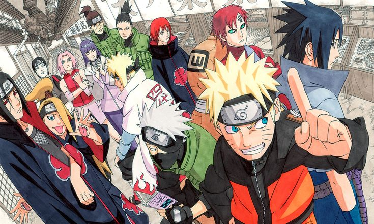
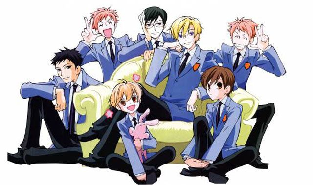
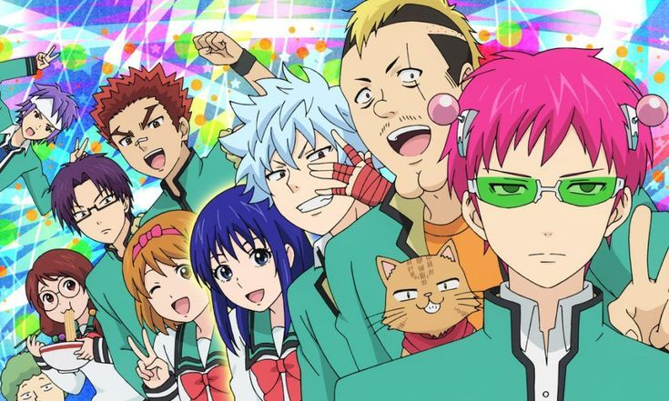

Anime 💖
El primer anime que vi fue Naruto, y la verdad le tengo mucho cariño y nostalgia.
La historia se divide en dos sagas: Naruto y Naruto Shippuden. De esas dos, mi favorita es Shippuden
Animes Favoritos
Ouran High School Host Club y La vida desastrosa de Saiki
Han sido mis favoritos desde hace años, ya que, por ejemplo, Ouran tiene una trama de romance combinada con comedia; para mí eso hace que el anime sea muy entretenido. Después tenemos a Saiki, que es más un anime de comedia, pero me gusta mucho el tipo de humor que maneja y la manera en que desarrolla a sus personajes.


Personajes Favoritos
A continuación te mostraré una tabla con mis personajes favs de todos los animes que he visto:
| Nombre Personaje | Anime |
|---|---|
| Bokuto Kōtarō | Haikyu!! |
| Kakashi Hatake | Naruto |
| Violet | Violet Evergarden |
| Maes Hughes | Fullmetal Alchemist |
| Riza Hawkeye |